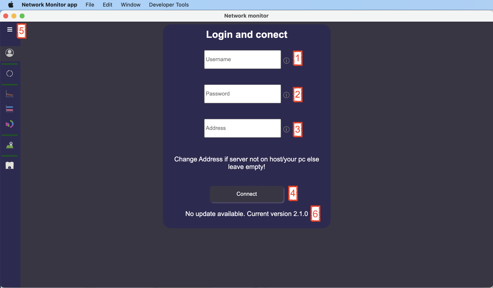

Manual
Login form:
Login form for conect to server.

- Fill your name which you sett on server.
- Fill your password which you sett on server.
- If your server is not on your pc. You should fill address of server where app is runing otherwise leave it empty.
- After filling form click on this button you will be logged in. If there is an error check if server is running and you can try to ping on it.
- If you click on this button you will see tab titles. Like on next picture.
- There you can see number of version you are using.
Task handle:
Table with tested servers.
- Adding button after click will open form (Adding or updating).
- You can find server from table by name.
- Updating row after click it will open form (Adding or updating) with predefined walues from line .
- Status of task if there is this it is not runing. If there is this it is runing. After click on these symbols it wil togle status.
- Thissymbo means values are in table visible. This symbol means datas are hiden in graphs. If you click on these symbols it will togle visibility.
- Trash can after click you will remove this testing and data from server.
- This row is clickable. You can click on ID, Name, Address, Period, Status and graph visible. and table wil be sorted by this colum.
Adding or updating form. Where you can fill all inputs. Address of server is url or IP address. period could be in mins or hours or seconds in format (Xs or Xm or Xh)
Line graph:
Graph with responses in time.

- If you click this button app will reload all data for all graphs for one day back. If auto load is turned on app will append new measured data in all graphs.
- This button will download data in interval and with step like dys, years... Data will be updated in all graphs.
- Settings button: it will open thiswindow:
- There you can set auto reload time.
- This checkbox defines autoreload. If checked autoreload is on if not counter is off.
- Graph area length mean how many values will be visible in graph.
- Set starting time if you leave it empty there will not be minimal time it will load all data without down limit.
- Set ending time if you leave it empty there will not be maximal time it will load all data without upper limit.
- There is list of rounding values you can round measurement in Years, Months, Days, Hours, Minutes or Seconds.
- If you zoom in you can move graph to left whit this button.
- Reset zoom.
- If you zoom in you can move graph to right whit this button.
- If you click on name of server it will togle visibility in graph.
Horizontal bar chart:
Graph with count of successful or failed conections.
- If you click on name of server it will togle visibility in graph.
Responses pie and donut chart:
Pie chart show average values. Donut chart is from measured values for each tested server.
- Pie chart with average times.
- Donut chart with count of tests.
- If you click on name of server it will togle visibility in graph.
Map:

- With this buttons you can zoom in or zoom out.
- After click on buble you will see name of tested server.